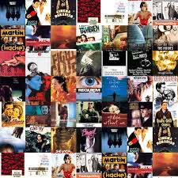

Cuando se habla del nacimiento del cine se toma como referencia la fecha del 28 de diciembre de 1895, en la que se proyectaron al público las primeras películas realizadas por los hermanos Auguste y Louis Lumière, en la memorable sesión realizada en el Salón Indio del Gran Café de París.
El origen de las series de televisión fue a finales de los años 60 cuando las series de ficción comenzaron su verdadera andadura en Estados Unidos. Cadenas de TV como ABC o CBS, entre otras, emitían series de ficción que tenían cada vez más audiencia.12
La novela tiene el antecedente directo del género de la epopeya, un género que se inició en la Antigüedad y que solía narrar las aventuras de los héroes clásicos, como ocurre en la Odisea de Homero.